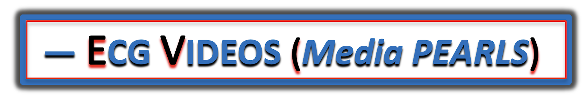
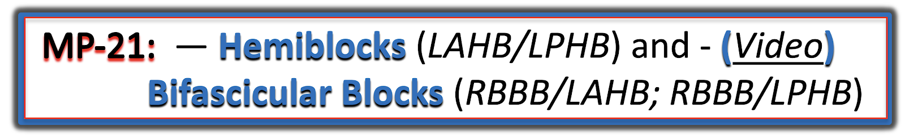
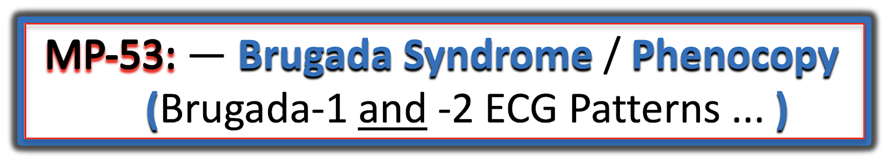

ECG Blog #225a — VIDEO ĐIỆN TÂM ĐỒ (Media Pearls)
Thưa bạn đọc: Trong khuôn khổ ECG Media PEARL Series mà tôi bắt đầu từ tháng 1 năm 2021 — tôi đã và đang mở rộng và cập nhật các video điện tâm đồ tôi đã làm. Để tiện ôn lại — tôi sẽ đưa tất cả VIDEO ĐIỆN TÂM ĐỒ lên trang này (cũng như trong bài ECG Blog nơi chúng xuất hiện lần đầu).
- Như mọi khi — tôi hoan nghênh ý kiến của bạn! Mọi bình luận hay câu hỏi: HÃY VIẾT CHO TÔI tại ekgpress@mac.com —
========================================
— Để quay lại bài mới nhất của ECG Blog = BẤM VÀO ĐÂY —
— Để truy cập ECG Audio Pearls — BẤM VÀO ĐÂY —
========================================


Các ca video điện tâm đồ mới hơn:
- ECG Blog #502 (25/10/2025 — 6 phút) — Đây có phải hội chứng Wellens?
- xxx
====================================
VIDEO từ các Bài giảng Điện tâm đồ MedAll của Tôi:
- BẤM VÀO ĐÂY — để xem DANH SÁCH YouTube gồm 6 video điện tâm đồ này.
====================================
- ECG Blog #403 (11/11/2023 — 22 phút) — dựa trên ECG Blog #220 (Ôn lại Cách tiếp cận Ps, Qs, 3R để đọc nhịp — rồi áp dụng vào đánh giá điện tâm đồ một ca nhịp WCT đều).
- ECG Blog #404 (18/11/2023 — 15:30 phút) — dựa trên ECG Blog #344 (Định nghĩa các blốc AV — Phân tích một ca blốc độ 2 — Là Mobitz I, Mobitz II hay không phải cả hai?).
- ECG Blog #405 (25/11/2023 — 19:40 phút) — Đọc nhịp dựa trên ECG Blog #191 (Phân ly nhĩ thất và blốc AV hoàn toàn).
- ECG Blog #406 (2/12/2023 — 22:00 phút) — Ôn lại đánh giá điện tâm đồ ở bệnh nhân đau ngực (CP) mới xuất hiện (gồm cả mô hình STEMI so với mô hình OMI — "Nghiệm pháp soi gương (Mirror Test)" cho OMI thành sau — Thiếu máu cục bộ dưới nội tâm mạc lan tỏa) — tập trung vào việc áp dụng Cách tiếp cận hệ thống để đọc điện tâm đồ 12 chuyển đạo — dựa trên ECG Blog #351 (OMI là gì, khác STEMI thế nào?).
- ECG Blog #407 (8/12/2023 — 22:30 phút) — Ôn lại đánh giá điện tâm đồ ở bệnh nhân đau ngực (CP) mới xuất hiện (gồm cả mô hình STEMI so với mô hình OMI — So sánh các điện tâm đồ nối tiếp — thay đổi ST-T "động") — tập trung vào việc áp dụng Cách tiếp cận hệ thống để đọc điện tâm đồ 12 chuyển đạo — dựa trên ECG Blog #292 (Vì sao bệnh nhân tử vong?).
- ECG Blog #408 (16/12/2023 — 18:00 phút) — Ôn lại đánh giá điện tâm đồ ở bệnh nhân đau ngực (CP) mới xuất hiện (gồm cả mô hình STEMI so với mô hình OMI — Sóng T tối cấp — Mọi thứ có thể thay đổi nhiều đến mức nào chỉ trong 20 phút) — dựa trên ECG Blog #392 (Sóng T tái cực?).
====================================
Sử dụng Cách tiếp cận hệ thống:
====================================

ECG Media Pearl #27 (3:00 phút Video) — ECG Blog #210 — Ôn lại Quy tắc 300 để ước tính tần số tim — và — ở phút 1:25 của video, Phương pháp Cách-Một-Nhát để ước tính tần số với các nhịp nhanh (2/4/2021).
ECG Media Pearl #77 (11:00 phút Video) — ECG Blog #269 — Ôn lại cách đánh giá Tăng tiến sóng R như một phần của mẹo ghi nhớ Q-R-S-T trong Cách tiếp cận hệ thống để đọc điện tâm đồ 12 chuyển đạo (gồm cả làm rõ thuật ngữ tăng tiến sóng R "kém" so với vùng chuyển tiếp — 18/12/2021).
ECG Media Pearl #78 (4:30 phút Video) — ECG Blog #270 — Ôn lại cách chúng ta định nghĩa "Sóng Q" — và cách phân biệt sóng q vách "bình thường" với sóng Q nhồi máu (22/12/2021).
ECG Media Pearl #79 (3:00 phút Video) — ECG Blog #271 — Ôn lại cách chúng ta xác định Đường nền của đoạn ST (tức là nên dùng đoạn PR hay đoạn TP — hay cả hai? — 26/12/2021).
====================================
Trục - Blốc phân nhánh - Blốc nhánh bó His:
====================================

ECG Media Pearl #20 (14:30 phút Video) — ECG Blog #203 — Cách tiếp cận dễ-dùng để tính trục (12/3/2021).


ECG Media Pearl #21 (12:00 phút Video) — ECG Blog #203 — Cách tiếp cận dễ-dùng với blốc phân nhánh (LAHB/LPHB) và blốc hai phân nhánh (RBBB/LAHB- RBBB/LPHB — 12/3/2021).

ECG Media Pearl #22 (13:15 phút Video) — ECG Blog #204 — Ôn lại một cách tiếp cận dễ-dùng để chẩn đoán Blốc nhánh bó His (RBBB/LBBB/IVCD) chỉ trong vài giây! (15/3/2021) — xem thêm ECG Blog #282 —
- BẤM VÀO ĐÂY — để tải MIỄN PHÍ PDF tệp 26 trang này về BBB (trích từ ECG-2014-ePub của tôi) — ôn lại Những điều cơ bản để chẩn đoán điện tâm đồ các Blốc nhánh bó His (gồm cả chẩn đoán nhồi máu cơ tim cấp & LVH khi có BBB).
====================================
Lớn các buồng tim (RAA/LAA - RVH - LVH):
====================================
XXX
====================================
Chẩn đoán Thiếu máu cục bộ/Nhồi máu cấp:
====================================
XXX
====================================
Chẩn đoán VT hay SVT (dẫn truyền lệch hướng):
====================================

ECG Media Pearl #28 (4:40 phút Video) — ECG Blog #211 — Ôn lại VÌ SAO một số nhát đến sớm và một số nhịp SVT lại dẫn truyền lệch hướng (và vì sao dạng dẫn truyền lệch hướng hay gặp nhất biểu hiện hình dạng RBBB) (5/4/2021) — Xem thêm ECG Blog #279 —
====================================
Các loại Nhịp Trên Thất (SVT-AFib-Flutter-MAT, v.v.):
====================================

ECG Media Pearl #16 (2:20 phút Video) — ECG Blog #199 — Thế nào là MAT (nhịp nhanh nhĩ đa ổ — Multiple Atrial Tachycardia)? Chẩn đoán như thế nào? (1/3/2021).
====================================
Chẩn đoán Blốc AV/Phân ly nhĩ thất:
====================================

ECG Media Pearl #6a (PHẦN #1 = 6:50 phút Video) — ECG Blog #189 — Blốc AV loại gì? Phân tích chi tiết rối loạn nhịp đầy thử thách này (gồm cả video điện tâm đồ phân tích từng bước giản đồ bậc thang phức tạp này) (30/1/2021).
ECG Media Pearl #6b (PHẦN #2 = 5:00 phút Video)

ECG Media Pearl #8 (8:20 phút Video) — ECG Blog #191 — Phân biệt Phân ly nhĩ thất với blốc AV hoàn toàn (6/2/2021).

ECG Media Pearl #9 (5:40 phút Video) — ECG Blog #192 — Ôn lại 3 nguyên nhân gây phân ly nhĩ thất (9/2/2021).

ECG Media Pearl #42 (11:00 phút Video) — Bàn về ca được trình bày trong ECG Blog #226 (có giản đồ bậc thang minh họa Wenckebach AV hai-tầng). Cho rõ ràng — tôi đã đưa lại điện tâm đồ 12 chuyển đạo và dải nhịp DII dài ở bên dưới.


ECG Media Pearl #52 (15:00 phút Video) — ECG Blog #236 — Ôn lại 3 loại blốc AV độ 2 — cộng thêm — thuật ngữ khó định nghĩa blốc AV "mức độ cao" (Video này cũng rất liên quan tới ca được trình bày trong ECG Blog #237).
- Mục 2F (6 trang = câu trả lời "ngắn") trong sách ECG-2014 Pocket Brain của tôi giúp ôn nhanh bằng chữ về các blốc AV (Tải miễn phí).
- Mục 20 (54 trang = câu trả lời "dài") trong bản mở rộng ACLS-2013-Arrhythmias của tôi bàn chi tiết các blốc AV LÀ GÌ — và không phải là gì! (Tải miễn phí).
====================================
Giản đồ bậc thang (Cách đọc và vẽ giản đồ bậc thang):
====================================

ECG Media Pearl #5: Video này (5:00 phút Video) — ECG Blog #188 — Cần biết GÌ về Giản đồ bậc thang? (LƯU Ý: Video nói tới một giản đồ bậc thang tôi đã bàn trong ECG Blog #187 — gồm cả, trong Phần bổ sung của Blog #187, các khả năng khác về cơ chế của rối loạn nhịp) - (Video được sửa lại ngày 10/11/2021).
===================================
Cách vẽ một Giản đồ bậc thang (Minh họa từng bước)
- Xem ECG Blog #69 — để có phần hướng dẫn bằng lời từng bước về cách vẽ một giản đồ bậc thang.
- Để luyện tập thêm, hãy xem bất kỳ đường dẫn nào trong rất nhiều ĐƯỜNG DẪN bên dưới ở cuối bài hôm nay!
- BẤM VÀO ĐÂY — Để TẢI VỀ MIỄN PHÍ KHUÔN MẪU Giản đồ bậc thang PowerPoint của tôi để bạn dùng tùy ý.
===================================
ECG Media Pearl #82 (8:40 phút Video) — ECG Blog #280 — Phân tích chi tiết rối loạn nhịp đầy thử thách này (gồm cả video điện tâm đồ phân tích từng bước giản đồ bậc thang tôi đề xuất — 1/2/2022).
- BẤM VÀO ĐÂY để tải PDF gồm mọi bản ghi xuất hiện trong video điện tâm đồ (gồm cả cách dựng từng bước giản đồ bậc thang tôi đề xuất) hôm nay.
====================================
Các bệnh cảnh KHÁC linh tinh (Viêm màng ngoài tim-cơ tim-XXX ):
====================================


Trong Phần 1 của ECG Media Pearl #53 (9:00 phút Video) hôm nay — ôn lại những điều cốt yếu về hội chứng Brugada.
Trong Phần 2 của ECG Media Pearl #53 (8:00 phút Video) hôm nay — những điều cốt yếu này được áp dụng vào lâm sàng.
ECG Media Pearl #53 (video 2 phần 9:00 phút và 8:00 phút Video) — ECG Blog #238 — Ôn lại chẩn đoán điện tâm đồ các hình ảnh Brugada-1 và Brugada-2 — và phân biệt Hội chứng Brugada với Phenocopy (kiểu hình giả)!
ECG Media PEARL #81 (9:50 phút Video) — ECG Blog #276 — Tóm lược Cách tiếp cận hệ thống của tôi để đọc điện tâm đồ 12 chuyển đạo (trong 2:50 phút đầu của video) — sau đó tôi áp dụng Cách tiếp cận hệ thống này vào một ca khi lần lượt xem xét các Nguyên nhân gây Sóng T Khổng lồ (Xem thêm ECG Blog #277).

Tôi hy vọng các ECG Media PEARLS của tôi giúp ích cho bạn.
- Thông tin liên hệ của tôi (email) có ở đầu trang này.